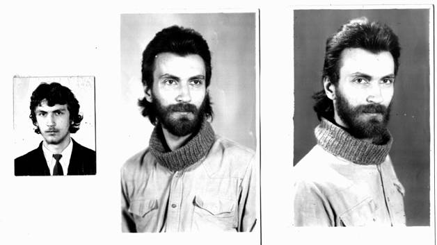
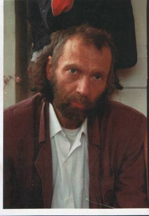

Яков Рокитянский
(1964 - 2017)
Стихи, написанные в основном в 1984-1988 годах
к оглавлению
Автору было 20-25 лет и он был в состоянии поиска своего пути, критического осмысления себя и мира вокруг него. Окружающие не понимали его. Стихи и музыка (его импровизации не сохранились) стали для него средствами самовыражения. Он не ставил цели заработать, прославиться, убедить кого-либо в своих взглядах или правоте. Он хотел понять себя, мир, природу, Бога. Крестился он в 20 лет по собственной инициативе. Не желая участвовать в Афганской войне, симулировал психическое заболевание и при обследовании в Психбольнице врачи подтвердили этот диагноз.
Мы, родители, одобряли его увлечение стихами (хотя пессимизм и сложность стихов нам не нравились), перепечатывали их и пытались содействовать их публикации. С 1988 по 1991 посылали стихи в некоторые газеты и журналы, но безрезультатно: редакторы отвечали за идейное содержание публикуемых материалов, а оно не было безукоризненным, как и художественное совершенство... Сохранились отзывы рецензентов двух журналов, отмечавшие плюсы и минусы с рекомендацией "доработать". После 1991 г. мы перестали печатать стихи на пишущей машинке и многие более поздние наброски, которые Яша делал на случайных разрозненных листах, не сохранились, а которые сохранились, содержат недоработки и требуют неоднозначное доредактирование... Да и накал его творчества после 1980-ых пошел на убыль. Рецензия 1988 года известного барда Александра Городницкого полностью приводится ниже после стихов.
Сейчас, вчитываясь в стихи Яши, я понял, что это был "крик души"; что если бы мы поняли это своевременно, то может быть смогли бы помочь ему, хотя навряд ли.
Это почти все напечатанные на машинке в конце 1980-х и сохранившиеся стихи, неупорядоченные по какому-либо признаку.
В 2019 со стихами Яши познакомился известный Крымский поэт и писатель Владимир Спиртус, слегка подредактировавший несколько Яшиных стихотворений.
| 
| Яша, 18 лет 22 года (1986 год) - пик поэтического творчества
|
Кубистический оттиск оконного дыма
Сквозь решетчатый шаг распростёртых лучей
Течет, преломляясь в звучании зыбком,
Как время - бессмысленно и неподвижно
Из-под ног вымывая остатки понятий.
Там за четыре шага до брандмейстерской вахты
Сквозь замочную скважину слышатся явственно
Голоса и дыхание жизни чужой:
Для соседей - привычной, постылой,
Для кого-то желанной, далекой,
Для меня неизвестной, понятно,
- Жизни не "для меня", вероятно.
Для меня корридор, что ни шаг - столкновение,
Чьей-то тяжелой боюсь пустоты,
Повторяюсь, как школьник-заика,
Ударяясь глазами словно лбом в темноте
Во все новые, новые двери.
Сердца ударов ведёт галерея
Как будто к двери знакомой,
Которая ждёт, собирая секунды,
Всё та же снаружи, как прежде внутри,
Которой всё нет почему-то.
И только сквозняк надувает плащи,
Благовествуя близость рассвета.
Отку-да, скажите - откуда
Ведёт по каким корридорам
Слепую надежду к прекрасному свету
Какой сумасшедший обманщик, двойник, пересмешник.
28.12.1984, Ухта
Это стихотворение, отредактированное Владимиром Спиртусом
По краю скользящей черты,
В погоне за улетающим звуком
Находить и горстями черпать алмазные брызги
На синем катере в белой пене,
Бегущей как спины чудовищ,
Играющих ласково и свирепо.
23.12.1984
На зов трубы, плывущий по холмам,
Качаются, срываясь с крыш покатых,
Как пальцы тонкие сквозь линии письма
Воспоминания ушедшего заката.
Полночный свет усталой тетивой
Нам звуки сквозь сомненья посылает
И дрожь унять ладонью питьевой
Поможет нам его подруга злая
И мертвое уже её лицо
Вдруг истиной наполнится сквозь веки
За час до петухов со всех концов
Сольются отголоски лунной деки.
В изгибах запаха, в запястьях сонных трав
Густа как воздух, призрачна как тени
Пронзительность летящего пера,
Холмов и звона высшее сплетенье
Как музыка бегущий пульс воды
Тревожит слух голодный тишиною,
Забытой в сонных стеблях лебеды
Потерянной открыточной зимою.
1985
Жёлтый филин - ночное окно
Звук отдалённый, свет отражённый,
Голос зовёт..., позабытый давно.
И продолжает нести околёсицу
Ветер с дождём, конь под вождём.
Спит старушка, собака по лестнице
Во сне бежит куда-то.
Осень на улице, прохожий сутулится,
Щенок счастливый на солнечных листьях
Человек спит на бегу
И видит покой с полноводной рекой
И спящего филина на берегу.
Это стихотворение, отредактированное Владимиром Спиртусом и Игорем Рокитянским
Подводные камни гореть не хотят
Несёмся навстречу в лучах атмосферы,
Чужой алфавит повторяем подряд,
Несёмся, играя лучами Венеры.
Чужой алфавит - десять букв, три значка,
Кружочек и крестик и обертона
Дождём пронзены мутноликие тени
И помнить не стоит их имена.
Чужой - в этом мнится болезнь и неясность,
Но мне он понятнее жажды сирот
Кружочек и крестик - двугорбые власти
Снасть круглорукая - страсть наперёд.
В двери стучится ещё один символ
Целой октавой истерзанных звуков
Рваной истерикой электродива,
Нервы и провода спутав.
Двери открыты - летим, как чижи
В красную бездну, в жёлтые горы.
Сине-зелёное мне покажи
Солнце, плывущее в бежевом море.
Слышу - про всё забываю
Слышу и сам становлюсь инструментом
И нищим, и папертью, имузыкантом,
Временем и текущим моментом.
Мокрые лица сверкают в асфальте,
В море купается мокрое солнце
Спазм непрерывный - дань экзальтации,
Меня чужие душат эмоции.
Пускай глаза полны песка
Лишь слёзы видеть не мешали б
Мы можем петь и говорить
И хвастать новыми цепями.
Мы можем горечь отделить
От сладких грёз и чистым ядом
Под вечер наполнять бокал,
Не находя на дне награды.
Пускай очередной обман
Как раз такой, какой искали,
Вода не оставляй следа!
Не поддадимся, брат, печали!
Мы можем петь как ветер в ночь
И можем говорить, как грозы,
И хвастать новыми цепями
Из ртути памяти числа.
10.12.1986
Повторение - трение в прозе скрипучих осей
Разных фраз одинаковых слов - всё без смысла
Параноид скрипичных ключей-палачей
Муравейник кирпичного астигматизма.
То ли листья в объятьях камней
То ли камни в объятиях листьев - скульптура.
Разбудили ночные глаза - как умели пасли свою шкуру.
Дивно стадо - змеиная мёртвая кожа,
А с кого и чего - лишь сухое чёрное ложе.
Чашей лунного яда русла подземные как наполнять?
Камо грядеши, Боже!? Ничем пастуха не унять.
Посмотришь - кто пастырь здесь, кто скотина?
Где ключи от магнитного плена?
Где выход из атомных склепов?!
Струну натянув между сердцем и мозгом,
Искал тишину на границе поющего бреда,
Но ушло моё детство слепое под знак муравья.
Барабанная дробь, как и дробные числа
Повторения ищут в словах,
Оправдания всякой кривой ... и потеха
- Скрипучее эхо
Загробного смеха:
Распятие вниз головой.
Хочу молчать, чтоб слышали меня,
Как если бы умел я говорить.
Как инвалид всех предстоящих войн
Имею право на молчание.
Но голос, заблудившийся в словах,
Уже не звук. В кромешной слепоте дыхания
Хочу ли слышать тишины бездонный звон?
Как воплотить,
Как вопль превратить
В понятный памяти удар по застоявшимся устоям?
Хочу, могу, имею право,
Но где я сам? Верните мне меня!
Где те поля, что станут мне постелью,
Когда с долгами рассчитаюсь я
Неузнаваемый язык грядущих воздаяний
Или места, где сам себя не слышу,
Мой враг, похоже, бестелесен:
Навстречу мне лишь тень - ударил в спину свет!
Кричу, упавши на колени,
Как Зло кричит об искупленье.
О Боже мой, как страшен этот крик
(Не мой - мне уст не разомкнуть, но)
Эхо мечется в колодце с моим изображением на дне...
Я сплю и просыпаюсь в тишине могильных склепов будущего.
Это стихотворение, отредактированное Владимиром Спиртусом и Игорем Рокитянским
Тишина обрастает ветвями,
Чтобы снова не быть тишиною,
Чёрным деревом или словами,
Вдалеке растворенными ночью.
Только слов на беду не слышно,
Только голос звенит как струны,
Пал со спутанными ногами
Жеребец на дорожке лунной.
Тишина тяжела как стены
За незапертой дверью в поле,
Где нашёл уже кто-то волю
И покой без креста на могиле.
Позабудь же полночной порою
Словно сон все слова чужие,
Пёс за дверью твоей бездомный:
Не узнай! - Я лицо закрою.
Средь петляющих тропок мглистых
В поле черных дорожек ветвистых
Я в потемках сбивался с дороги,
Оклик мой прозвенел словно выстрел,
Но в ответ тишина за порогом.
Жеребячьи поводит глазом
С поволокой белесой утро,
Кто уснул не проснется раньше,
Чем петух запоёт на крыше.
1985-1986
День похож на тарелку с испорченным супом
Из-за множества дурно пахнущих дел
В золочёной каёмке порочного круга,
А ночь не похожа, пока не заснёшь.
Дни какие-то бесконечные - перевернулась голова, закувыркалась.
Зима была - всё искал ... вереска зелёного, неба, губ,
В которых даже плохие слова мёдом льются ...
Нынче всё наоборот - бегу всего, оглядываюсь - на месте!
Сам себя хочу узнавать - обманываюсь.
Остановиться бы, посмотреть - каких таких пазуха полна камней?...
Я езжу в общественном транспорте целыми днями,
И вижу свой город тревожный сквозь грязные стёкла.
Хожу по асфальту, он мокрый и липнет к ботинкам -
Расплавленный сахар, в котором увязли светила.
Я чувствую в летних садах разобщённую слабость,
Когда холодеющий дождь повисает над ними,
Как падает, словно железная скрипка дождалась смычка,
Растворённое сладостью небо.
Мастер Компостер билеты жуёт
Гангстер-Кондуктор затеял полёт
На битом стекле
На игле
На метле
Летим на "Орбиту" в загадочной мгле.
Дорогу указывай нам контролёр
Спускается в шахту фуникулёр...
Орбиты не видно и мы в западне
Уснул наш трамвай при печальной луне
Приходится нам пересесть в луноход
Кондуктор, не поздно, давай задний ход.
Но нет тормозов в дирижабле моём:
Резину (зато не бумагу) жуём
Продолжаем подъём
Втроём
С муравьём Кондуктор!
Живьём!
Наверное, люди, подобные мне
Живут только там, где совсем не хватает
Чего-нибудь или совсем обожрались.
Не все, разумеется, так, говорят, не бывает.
От инструкций до заповедей
От инструмента до звука
От окна до стены
От страха до слуха
Не имеет сердце границы.
Я - есть
Здесь место порожнее словно бумага
Слышите видите осязаете обоняете
Время считаете, Меня вы не знаете
Но Я тоже время смотри в глаза
Слушай голос Меня нет -
Это значит, что ты опоздал, поспешил, не заметил.
Я лучше стану Этим пеплом
Чем буду жечь его ещё раз
Я лучше стану этим камнем
Чем поднимать его и бросить.
Но дышим мы одним и тем же дымом
И пьём одну и ту же воду
А лица наши так похожи
Что лучше не стать
Вместе быть невозможно.
Возможно так лучше, чем что-либо,
Возможно - это дорога в ад.
Когда я начал говорить себя не слыша,
Я узнал это есть, это вчера.
- Вчера было всё иначе, но никто не рад, почему?
Дорога торная - до горизонта вытоптана трава.
- Компас врёт, как и небо сплошных облаков.
Где нам себя потерять? Где найти друг друга,
Но страшно в будущее глядеть,
Проститься страшно с привычным миром,
Как страшно память свою швырнуть на чашу Весов.
06.08.88 ст.ст.
Это стихотворение, отредактированное Владимиром Спиртусом
Я помню о тебе, забыв, что значит помнить.
Нам вряд ли суждено узнать, но я однажды воин
Дважды обречён на память.
Если б я мог сказать то, что должен,
Если бы должен был то, что могу,
Если бы кровь, пот и слёзы
Мой разум позволил держать мне, как слово и паузу,
То кем бы я был и что бы я делал,
Скажите глаза моей смерти пустые,
Скажите века моей жизни подспудной
Скажите мне кто я такой, если знаете сами.
19.08.88 н.ст.
Это стихотворение, отредактированное Владимиром Спиртусом
Чёрное - чёрное, белое - белое.
Снег - постоянство, кровь - торжество.
Только в безветрии эхо растает
Заячьей стаей белых ворон.
Власть увлечений, что лесть облачений.
Звон в позвоночнике...чаша...наручники
Жизнь - лабиринт и лишь лотерея.
На молниях и на серебряных цепочках
Распятый миг всё содрогался
В плафонах круглых ламп, плывущих навстречу
А всё то, что не сумел ты отдать
Отражается в стёклах очков безразлично, зеркально.
Распятый мир
На полосатых резинках и полиэтиленовых кульках
Препарированный, размноженный, разглаженный
И вновь заезженный изжеванный
На эскалаторном конвейере массового культуризма чувств.
Но если снять ВСЕ очки?
Неужели только стекло способно отражать,
Неужели привычка и абсурд сильнее способности зрачков
Видеть? - в них невозможно отразиться
И что делать в них ЕМУ, рождённому любить.
Я отдохну и... не буду учиться чужому
Буду долго молчать, чтобы собственный голос запомнить.
В мире прошедшем моя потеряется память.
Цепи, нити, мыслей ключи пылью осядут на камень.
Я усну на мгновенье, как камень на узкой ладони
Первой женщины Света, которой - Безмолвие имя.
Я живу - это очень похоже на правду:
Камни чистой воды и живая вода рядом с пеплом.
Это стихотворение, отредактированное Владимиром Спиртусом
Тонкая черная линия делит мишень на две части.
Мертвая зона. Медлительный мозг. В глине вязнут тяжелые пальцы.
Небо - точный метал, но никак до курка дотянуться не может мой город - стрелок.
Холод и власть. Он моя колыбель ледяная.
В нём из ртути куют зеркала, равнодушно-бездумные мысли удар за ударом.
Пульса клюв занесён над висков скорлупой. В горле-стволе сердце-пуля звенит серебром.
Бедные маленькие свиньи, люди - щепки в водовороте событий.
Рабство условностей и привычек: смерть - подвиг, жизнь - трагедия.
Поднять голову и оглядеться, чтобы еще больше запутаться.
Непрестанно углублять своё дремучее невежество всё новой и новой информацией.
Путь стада от стойла, полного пищи и нечистот,
Через непроходимые трущобы болот мифологии
В молчаливую пасть океана будущего.
Только флейта над равнодушной поверхностью вознаградит за страдания последним "прощай"...
Бедная маленькая свинья! Неужели тебе некуда идти без этих звуков,
Без музыки, которую не понимаешь?
20.04.1986
Когда я был так мал,
Что всякая ночь была так убога,
Что я был так мал,
Когда падала пригоршня звёзд мне в ладони
И лунного света хватало вполне,
Чтобы пашня моя в цвету круглый год оставалась.
Так странно об этом вспомнить, что я пока не сплю
Будь со мной моя память, как падают звёзды каплями света в ладони.
Я был так мал потому, что каждую ночь всякий свет моей пашне годился.
Всякий год моей памяти хватало, чтобы ночью не спать.
Каждую ночь!, срывая цветы, чтобы дарить их только тебе, и ей
Потому что я мал, точно капля дождя моей пашне...
Но не сплю я и лунной дорожкой иду по мерцающим тихо волнам.
06.08.88 ст.ст.
Созреют времена и сроки
С деревьев станут падать листья
Желаний - форм и притвориться
Зелёными не смогут строки.
Падут дожди на пыльный город
Поры цветенья поминаньем
А мир исполнен пониманьем
Их разрушительных аккордов
И мы увязли в ожиданье
То перемены, то дороги
Из листьев суеты сугробы
И забытьё за увяданьем.
Мягкие шестерни дней, называемых будни
Расплющили время в жидкий песок.
На звёздочках праздников ржавчина:
Цепь замыкается сном поколений песочных.
Эхо в колодцах пустых настоялось до бреда:
Напиток тяжёлый - кружка легка
Что дыма колечко - круги на воде,
Выпитой, правда, до дна, но пока не забытой.
С утра, пробудившись к насущной работе,
Проснусь ли к обеду, нагретому громким полуденным солнцем,
Для большего, чем повторение формул,
Заученных с детства, забитых как гвозди в мозги и ладони
Прибой городской механической жизни, наливаясь железом и зноем,
Ударит напор магистралей-артерий в утробные гонги больших площадей.
Съёжатся тени, сгорев в нарастающем шуме
Воздух вдыхаемый станет гремучим и грязным
Как утренний кофе, чья беспросветная гуща
Необходима хранителю света и хлама,
В котором дана мне щемящая праздная горечь
За несколько слов или годы бессонных скитаний.
Зачем же теперь проклинать и хвалить свою участь,
Когда набирая со скоростью вместе усталость
День катится навзничь обратно в жилые кварталы.
Три действующих лица в комедии
Одно действующее лицо в трагедии
В нарисованной пьесе - ни одного лица.
Так далеко твой дом, чужой навек, что я и след в песках не потеряю.
Но так светлы твои глаза, что немота меня дотла сжигает.
Когда впервые не увижу их, последний раз я выйду со двора.
Я продолжаю видеть наяву кошмарный сон, я должен видеть.
Мой сон отравлен бредом бытия, мой мозг пропитан ядом.
Безумие и ненависть - две стороны монеты
Любовь нельзя продать!
За что же платой льётся как река
Мой бесконечный плачь? Кому плачу я...
Серебряная птица саксофон
Как попугай паясничает в клетке
Не захлебнётся.
Не люблю рифмовать, а слова иногда ненавижу,
На любовь наплевать, помогала мне ненависть выжить
Серебро одиночества, золото объединенья.
Презирая металл,
Будь же камнем мое поколенье!
Как идти по дороге, которая плоть или знаки,
Чтоб остаться собой, хоть немного светясь в окружающем мраке?
Мёртвый звон кандалов заглушить ли искрой голословья?
Из растоптанных слов возродиться ли новой любовью.
Серебро одиночества, горечь утраты и гордость...
Золотая оправа единственных слов, дай нам сил
Обрести в единении разума твёрдость,
С чистой волей свободы, чтоб истина мир осветила!
Братья, слышите! Нашей искры не хватает!
Это значит, молчать не имеем права!
Братья, где же вы?! Вера нужна человеку, кто бы ты ни был.
Вера тебя отличает от враждебного Мира, -
Мира, который - чудо, если мы до сих пор живы, если в сердце осталось чувство.
Не люблю рифмовать и за это себя ненавижу,
Потому-что назвать обязался словом всё, что знаю и всё, что вижу, а не на чужом-готовом.
Ненавижу привычки в людях, что порой выдают за веру.
Верю в то, что иначе будет, и я в этом не разуверюсь.
Воскресение 4.05.1986
Вот она, горячая извилистая дорога зовёт меня.
Отсюда она похожа на жёлтую нитку,
А вокруг поля:
Поля кукурузные, магнитные, шахматные, конопляные...
Ротозеи шляются взад и вперёд, размахивая хоботами.
Воздух сух и каменист, зеленоватыми прожилками сверху вниз.
Бархатные цветы плывут по дороге, то плавно и легко, то бурно и стремительно, путаясь в ортодоксальных кувшинках и динамических пароксизмах покоя под копытные звуки регтайма, доносящиеся со второго этажа.
А с четвёртого уже явственно проступает поле зрения, испещрённое множеством точек, и отдаленные очертания первых Предвестников.
С двенадцатого же этажа и вовсе ничего не видно, что так необходимо усталым постояльцам печального застолья, бросающим с лестницы скомканные сигаретные пачки, как бросают жребий под вкрадчивый шелест стенографисток и тревожно-придушенное стрекотанье телекамер, слегка отдающее сыростью камер тюремных.
Но лифт не работает, а фаянсовый рояль под стремительными пальцами сиятельного любителя быстрой езды почти глиссирует и вздохов напрасных не вызывает.
Право кататься на велосипеде по ковровой дорожке из конца в конец не фикция. Но упасть, упасть прямо перпендикулярно воображаемой высоковольтной линии, вывалившись из двузначного хранилища сомнительных метаболизмов прямо в низкую облачность через окно, гораздо порядочней, чем делать вид, что память начинает нам изменять, и плести ни весть что, упорно отмахиваясь от мыслей и комнатных насекомых, вяло атакующих инфантильных пришельцев под ритмичные подергивания индифферентных хозяев поля.
Дети плачут, взрослые матерятся, воздействуя таким образом на друг друга, на окружающую среду и самих себя; - создают и поддерживают ноосферу на стабильном постоянном уровне.
Так было. Помните, когда все бежали в ужасе и не слышали Музыки. Наш страх кричал так громко, что многие оглохли навсегда. Сейчас точно также: мы не слышим Музыки, но знаем, что она есть.
Климатический опиум - сеть опоясывает скрытое сердце планеты,
Шельф - океанская гусеница подпирает подошвы шагающих гор.
Тектонические артерии вращают полярность.
В атлантической улыбке расплываются скулы материков.
Магматический спазм в сокращениях мышц великих разломов
Рудным нервом подаёт нам знак подобный Южному Кресту перед бурей.
Соединённые в пожатии руки оставляют все слова за спиной.
Свет поднимается с востока, но не становится словами.
Чтобы словам стать светом, давай помолчим на дорогу.
Здания мне не нужны, к полям не притронусь, пока головы не сложу.
Музыка, дай мне дорогу! Господи, дай мне дорогу!
1984-1985
Изумрудная слякоть, наперсница снежной тоски
Наливается мглою от каждого взмаха весла.
Тяжко тянется в гору скрипучая наша телега
Бездорожьем, где бродит одна лишь глухая молва.
Скрип колёс и уключин сливается в жуткую песню и пляску
И отчаянно носится этот простуженный звук
Над размокшим пространством в промозглом тумане...
Ну а мы вместе с ним и уже невозможно понять
- Кто есть чьё порожденье.
1984-1985
Провис медовый свод небес, нависших туч покоя туши,
А ветер бродит, будит лес, как брага будит наши души.
И нашпигованные кроны высоких сосен не падут
Под тяжестью лишь из приличья, не есть же тяжесть свойство птичье!
Зверья и гадов пышный хор звучит жестянкой труб и кровель
Всепожирающий аккорд для жертвы требующий крова
Кипящу в жерлах божеству, что превратит людей в животных,
Если не принять капель рвотных, без нас быть, верно, торжеству
Паштета из травы лесной над искушеньем лотереи
И по дороге подвесной не повлекут нас Пиренеи,
Где мёд не киснет в небесах, а Солнце в синих голосах
К Атланте голое плывёт (там в браге не находят смысла)...
Плывёт? Да нет - стоит... Повисло.
Невозможно проникнуть в значение слов, различить среди шороха и бормотания
Сквозь блочно-панельные перекрытия интонации их смысл.
Видимые предметы ограничивают и не пускают заглянуть внутрь,
Пытаясь переиначить наш взгляд на свой манер.
Протест - признак того, что форма отливается успешно согласно матрице.
Но стоит искать выход пока не чувствуешь себя аморфным
(найти не трудно, труднее им воспользоваться)
Просто нужно идти, когда зовёт темнота.
Она не может обмануть, как обманывает то, что кажется светом.
Если идёшь в темноту - помни, свет у тебя за спиной.
Создай свой мир! В своём стремлении отдавать ты чужд природе предметов,
Однако, смотри! Кто-то идёт навстречу по пустому едва освещённому коридору.
Каждая вибрация рождает звук, и каждый звук рождает вибрацию.
Тела, соприкасаясь, отдают друг другу _своё_ тепло,
Невидимые лучи пронизывают их, и нет стен, нет окон, нет слов...
Чувство. Суть. Поиск. Весть. Путь...
Куда бы ни обратил ты взгляд, к свету или в темноту, если ты близок одному, значит близок и другому. Важно лишь твёрдо знать, куда ты.
Прощай же. Если никто из нас не забудет, мы обязательно встретимся.
Шёлк гораздо быстрее мокнет, чем сохнет
Так и сердце сильнее помнит, чем любит.
Любит прошлое в настоящем, в грядущем,
Ищет будущее наощупь.
Плачет-ищет в лесу деревья с надеждой,
Мокрый шёлк, ах, напрасно бьёшься ты, сердце!
Ах, стекло и лёд не расплавить, шёлк-память,
Слёзы падают, звенят медью в прилавки.
Нет шелковицы - плодов нету, так вышло,
Всё шелковичный червь-ваятель сомнений
Сохнет шёлковый за стекляшкой, за льдинкой.
За деревьями леса не видно.
Только мертвые листья-вещи, ткань жизни,
Шёлк горит гораздо быстрее, чем мокнет.
Лёд на сердце, стекляшки листья, огня бы!
Но сгорает шёлк моей жизни так быстро!
Что ничем не успеть мне остаться на свете...
Для чего ты? Такой дорогой шёлк жизни.
Нити путей, ненадежная связь, иллюзорная сеть, суета расстояний
Наши тени повержены в прах и не станут преследовать нас.
Здравствуй! Так что же ещё между нами?
Дым от костров, животворный туман. Вся словно тайной покрытая далекая осень,
Пламя свечей, седина пеленой, что первым снегом ложится на плечи,
Всей тяжестью прошлого снег нам ложится на плечи.
Нити смысла, ведущие вдаль как узел, связующий двери с владельцем ключа
И мотор, приводящий в движение время, - маятник сердца вспять воды Стикса несёт.
Но завтра сулит лишь вчерашние песни. Сегодня сулит лишь надежду и кажется мы безнадёжны.
За спиной догорают стены, мосты и погосты, а выжженная эта земля звенит, как набат.
Гудит под ногами земля и этот гул объединяет пульс, путь и смысл с риском расстояний.
Без риска не дышать в сетях невидимых, а этот канат, чуть потолще четвёртой струны,
Гарантия риска и путь между нами в далёкую осень.
12.10.1988, Киев
Собиралось холодное утро нутряной поволокою туч.
Свои серебристые кудри по ветру ивы стелили,
Одевался мир в шкуры нутрий, пряча за пазухой солнечный луч.
Подними, медноглазая осень, веки с ресницами стрел дождя, -
Увядая под пылью... лета как не было вовсе.
Ах! Лето! Мы не узнали тебя!
Чтобы видеть глазами дня
Луга расстилают туман по травам.
Веки рассвет поднимает
На каждом острие ресниц утра
Маленькое солнцеглаза открывает.
Движение против ветра, сопряжение с формами спектра,
Тяжесть шагов последних, песчаник взлетает следом.
Волны зелёные скалят клыкипод гривами пены - зовут обратно
В море, хрустальные чьи потолки примут, обнимут, одарят.
- Что будет? - Никто ни о чём не спросил.
- Все умрём. - Никто никому не ответил.
- Зачем? - Только сумрачный ветер
Всё равноэхо вдаль уносил.
Что в воздухе? - не звук, не запах,
Деревья на кошачьих лапах эфир ревнуют к темноте,
Там так причудливо легки ночные птицы пролетают,
Широко крылья простирая над берегом ночной реки
Где рыбы быстрые, как птицы... тростник над царственной водой,
Как эти черные ресницы, скрыл отражение моё.
Простёртые тени кленовых объятий
В аллеях пустых переулков безлюдных
Ущербную память тревожат молчаньем,
Неторопливой своей тишиной.
Я их обхожу как могилу сует,
Сплетенье которых мой мир образует,
Но с крыши огромного жёлтого дома
Смотрю обречённо, как стал их добычей
Птичий язык - без отдельных слов
Фраза - оттенок вечного свиста;
Время течёт без особого смысла:
Никто не торопит его череду.
Жесты - всего лишь отсутствие звука,
Впрочем, движение тоже наука,
В нём что-то есть от звучащего танца.
Меркантильности на смену придёт бессмысленное расточительство,
Инфантилизм и бездуховность сменятся истерией и отсутствием меры в проявлениях.
Бунтарские настроения обернутся до идиотизма напыщенной восторженностью,
Отсутствие идеалов, весьма наскучившее, заменит их невообразимое, до безобразия, разнообразие.
Подводная лодка в океане информации поднимается на поверхность,
Чтобы в последний раз видеть закат над безжизненно гладкой поверхностью
Заходящего Солнца перед последним погружением.
Плавальщики на баржах не поймут этого жеста, потому чтобаржа
Даже самая, что ни на есть, погружается только один раз, и кто знает
Что там под водой? Кричат: "Надоело, уж лучше кормили бы крабов", -
Не зная, что там, где подводные рифы и лодка и тысячи водорослей -
Жизнь растительная немая жует исполинскими челюстями
Расползающийся шлейф цивилизаций и без всяких прибауток на самом деле, просто так
Проглотит хрупкий мир сознания, если какой-нибудь из механизмов,
Приводящих ваше плавсредство в правильное положение, вышел из строя.
Знает об этом подводная лодка, об этом написано в ней посерёдке:
"Того, что случится, нам знать не дано. Прикинь на досуге, не худо ль оно?"
Длинные дни оседают на дне
Ретроспективы бредущей из завтра.
Звезды сказали мне: "строить".
Я падал в колодцы и камни со дна доставал как охотник.
Странные сны каждый день наяву -
Долгие проводы, редкие встречи.
Длинные руки у времени, пьяные ноги у счастья,
Ночью глаза велики у пристрастий.
Рухнут дворцы, а из хижин певцы
Выйдут с теплом через вьюшки печные.
Кто меня звал разрушать? Как же быть, если вспомню?
Песню не спетую дымом поветрия носят.
По ветру жизнь пустотелая мстит,
Свистом врываясь в оглохшее сердце.
Чёрный, как взгляд подворотни, затвор интервала
Сближаетмои незнакомые руки.
Пьяные дни пролетают во сне
Спящим охотникам - влага, что опий.
Как оседлые странники в след перспективу плетут
Чувства, а на губах уж горький осадок.
12.08.1987
Цвет:
Пижамный двойник из горящих кафе - футляр зубной ностальгии;
Гильотина - хромированный паром, твой придаток строфе.
Звук:
Барабанно-скрипучий град рассыпается по перепонкам
Свинцовых горошин в пустые жестянки крышек - мыслящие консервы.
Память:
Энергия распада личности в запрограммированных аккумуляторах, горящих кафе
И пропитанных дымом квартирах, похищающих кислород провалами воспаленных желёз.
Чувство:
Замкнутый круг гниющего воздуха в культурной ампуле, где даже живые цветы - мертвые,
Звуки иглами ищут выход, вырастая в золотые кактусы, сталагмиты - мечты о чёрных песках пустыни.
Начало:
Более пригодной для жизни, чем камерные притоны для надорвавшихся очевидцев собственного разрушения в глазахзаинтересованных лиц, многих лиц одного человека другого времени, другой страны, другого мира.
В одежде, в крови, в каждом звуке пространство звенящих зеркал.
В машине погрешностью мощность,
В камере мира ценой не становится то, что найду я.
Война или яд -
Даст, остановит, живи скажет так же как те,
Что мечтой обжигали пока было время.
Сегодня, здесь, всё. Нет запретов.
Мы и они - нет меня в этом.
Кто-то звучит без предела. И льдом параллельно любви Эталона кленовая клетка.
Кровь растворяет тень тела. Народ отражений
Добра, бесподобный, гордец и поборник, подельник воды в решете.
Лабиринтом отчаяния я и не я становлюсь посреди телеграфной дороги...
...
Они или мы? Чьё оружие право на поиск?
Прострелен навылет темп клетчатых плеч,
Калёным железом твой голос традиций лишён.
Стынет разбавленным клеем гордая наша мечта.
Те, что безветрие, пламя, меченый дар пустоты
И барокамерный хор поднимается в заводь
Афишам завидуют зубы заводов
Без запретов мечта-мешанина
Ты сегодня, я завтра и спать нам под шепот веков,
Зеркальный аквариум взяв напрокат бестелесно
Пусть чья-то одежда научит машину дышать,
Продолжая пространство любви бесконечной дорогой молчания.
В разношерстной толпе, без пути и надежд
Потерялись следы, но искать не хочу
Были ближе, чем пальцы и руки в ключе,
А сегодня уже не узнать никого.
Горечь диких плодов и таинственный мёд
Я на дым и безликую мглу променял
Он огни оставлял, чтобы петь тишину
Ты брала мою руку в огне декабря.
Кто из нас был рекой, кто был берегом, дном?
Кто был лодкой в холодной прозрачной воде,
Ветром в жаркий безоблачный день
Над поющим безмолвие звёзд тростником...,
Но Апрель и Сентябрь, сплетающий плеть,
И кентавры, Луну превращая в часы,
Отравили мне душу холодным огнём
Я увидел как меч превращается в мяч,
И пошёл, наблюдая Сатурн и Тельца
Будто вдруг впереди заиграла свирель,
Будто в доме моём затеплилась свеча,
Будто кто-то мне счастье вдали посулил.
Колесо моей жизни почти барабан
Отлучил от оси про запас музыкант.
Он играет на скрипке вчерашнего дня,
Электрической дрелью ей вставив глаза.
И поэтому холодно будет тому,
Кто случайно со мной повстречалсяво тьме,
Не имея в руках камертон и стекло,
Даже если он петь научился во сне.
Никого не успеть научить. И зачем
Разрушать, если строить не нужно уже ничего?
И к тому же я занят, когда я могу посмотреть
Как Кентавр Прозерпину ласкает тяжёлой беззвучной рукой.
Июль 1987. Болниси
Цейтнот мотива - ленточный паук зацвёл в пересечении парафий
Иглоугольность угольных наук в трущобы рифм уводит амфибрахий
Мнёт крылолистник мокрая змея под излучением незримым сладострастна
И падший дождь, дыханье затая, ей плачет вслед и снова небо ясно.
И снова музыка и стрелоглазый лес весь в папоротниках словно пентограма
Пропитан лейтмотивами чудес исполнен тишиной ночного храма.
В высоту из бушующих чертополохов, Из утробы гигантского трубопровода,
Через жизнь, которой желали и жили, Через стены, в которых пытались казаться другими,
Подниматься - призвание духа и дерзость
Шаг над бездной и всё обретает значенье
Слышишь музыку - это звучит чьё-то сердце,
Разрывая себя, как стальные объятия власти.
Пусть Земля закачалась - ногами её удержи.
Касаясь только тонких струн
Пронзительно и судорожно звонких
Кто искру высекал из грубой глины
И из холста пустой породы уголь,
Чтоб Печь топить под тайные напевы?
Кто был старатель и хранитель слова,
Могущего сегодня зазвучать не громче, но сильней иного?
Кто ждал, как звуки эхо ждут начала неземной болезни
Землетрясения и песни к восходу Солнца рвущей грудь.
Чей добрый дар хранить едва ли в силах,
Чей вздох и слог не сбыть, не удержать
Нам, нынешним, забывшим свое имя,
Но призванным его посевы жать.
2.01.1985, Ухта
День пройдёт без следа. Успокоится всё, что могло бы оставить следы.
Причисляясь к бесчисленным кучам отбросов, из глазниц вытекают глаза... и мозги вслед за ними.
Это ночь, и над сном обескровленной жизни снег кружится, как вороны из негатива -
Противно кричат в чёрном ящике неба, но крика не слышно настолько они далеко.
Лязг лопаты-ковша, соскребающей мерзлую мерзость с асфальта:
Трупы птиц и растений, идей и расчётов, эмоций и взглядов на миропорядок
Бьётся с собственным эхом. Контейнер из зимних трущоб подается в трущобы без времени,
Где постоянно голодный электрической челюстью щёлкает там автоклав...
Ночь пройдёт и опять колбасу привезут в магазины.
И желудок вещает, что деньги не пахнут
И владелец его, от вещизма слегка посинев, атакует прилавок.
Не греет кровь, не греет пламя, ни что ни чем не остаётся
Не то и не к тому, но что-то движет речь.
Нет тайны, нет пути, но шум потока, в котором раствориться не даёт
И время жадными глотками безжалостный и ненасытный ум вдыхает, выдыхает, плавит
И жжёт как свечи в глубине зрачков. Не греет ни вино, ни пламя - ветер.
Всё опадает: листья, кудри, снег и звёзды, всё в поток; и он уносит их всё дальше
И в далеке холодном и пустом они сливаются. Не различить ни слов, ни лиц.
Лишь растворитель будоражит, бередит, но кровь не греет.
...Холодные, тёмные и равнодушные волны. Ни смысла, ни пути, ни дна
Поверхность гибких отражений...
Не узнавать себя и узнавать опять и только то, чего не узнавал.
Я трижды нем, но все произношу слова. Я глух как дым, но кто-то повторяет
Движения за мной и имя, я не уверен, кажется моё.
1989
На подборку из выше приведенных стихотворений известный бард написал отзыв:
Александр Городницкий о стихах Якова Рокитянского
"И не буду учиться чужому"
Эта строка из стихов молодого поэта Якова Рокитянского вполне характерна для них. В них нашли отражение сложные проблемы сегодняшнего нового поколения, не желающего привычно брать на веру стереотипы старого мышления и рифмованного ямбического стихосложения. При всей спорности, частом несовершенстве и некоторой литературности этих стихов они привлекают самостоятельностью видения и отображения окружающего мира во всей его сложности и неуюте. Неслучайно обращение автора к верлибрам, - он органично не может втискивать свои мысли и впечатления в накатанный ритм с гвоздиками рифм в конце каждой строки. Его эксперименты не всегда кончаются успехом, но само стремление к метафоричности, отказ от автологии, иногда излишнее усложнение стихов, свидетельствует о любви автора к слову и серьёзной работе с ним.
Стихи Якова Рокитянского не всегда ровны. Более других мне нравится стихотворение - почти проза, - "Музыка ноосферы", очень точно отражающее кредо автора, печаль поколения: "Помните, когда все бежали в ужасе и не слышали Музыки. Наш страх кричал так громко, что многие оглохли навсегда. Сейчас точно также: мы не слышим Музыки, но знаем, что она есть." В наше сложное время, которому предшествовали десятилетия неискренней "печатной поэзии", почти уничтожившей веру в стихи среди молодежи, очень важно не слыша Музыки, знать "что она есть".
Мне представляется, что лучшие из его стихов, из которых может быть составлена небольшая книжка, должны быть опубликованы и вызовут интерес.
27.09.1988, Москва
А.Городницкий, член Союза Писателей СССР
В 2019г. Владимир Спиртус писал:
В целом разделяю мнение А. Городницкого. У Яши был поэтический талант, который он, к сожалению, слабо смог реализовать в силу известных обстоятельств: постепенного погружения во мрак и хаос, что никак не способствовало творческому росту. При том он интуитивно правильно выбрал наиболее подходящие именно для него изобразительные средства. Это - сформировавшаяся в 20 веке форма композиции - верлибр, когда нет ни размера, ни рифмы, а строчки не упорядочены по длине. За счет стихийного управления ритмикой стиха может достигаться высокая степень свободы и пластической выразительности. В сочетании с приемом "потока сознания" и плотной насыщенностью метафорами может создаваться сильный эффект. Подобные вещи особенно характерны для современной европейской поэзии (французской, в частности).
ПИСЬМО ЯШИ СВОЕМУ ОТЦУ ИЗ КОСМОДОМИАНОВСКОГО МОНАСТЫРЯ в КРЫМУ,
в котором он полтора года 2009-2011 был послушником
1.10.2009. Не умею писать письма, а учиться можно и до ста лет (век учись - дураком умрешь), а вот есть ли разница - дураком я умру, как еще недавно весьма надеялся, или же случится со мной что-то еще, чего до сих пор не было - не знаю.
Но, кажется мне, прилично было бы начать с приветствия:
Мир и благоденствие шлёт недостойный и малонадёжный, но искренне Ваш сын младший. Драгоценный Игорь Иванович, хоть я и понимаю, что извиняться почти так же нелепо есть, как и совершать действия, от которых впоследствии проистекает в этом потребность, однако в первых строках своего письма хочу просить прощения, потому что, папа, я согрешил против Тебя и согрешил весьма. Прости меня.
Прошла неделя, как мы с тобой и А.Геннадиевичем приехали в Обитель, где я и нахожусь и откуда пишу это послание. По пословице мне до смерти дурацкой осталось 55 лет учения и вспоминается другая пословица: "тяжело в учении - легко потом..."
Хорошо понимаю, что жаловаться нужно меньше, но я наверное с непривычки устаю, хотя деятельность мою никто не торопит, а занимаюсь я строительством огорода и кроме этого сплю, ем, присутствую на службе по часу 2 раза в день, читаю совсем немного и иногда могу послушать плеер (в основном вечером). Я живу, точнее ночую, в одной комнате с парнем, который днем строит крышу в доме, где находится монастырь, а вечером пока не спит щёлкает компьютерной мышкой. Питание хорошее. Вот подумал попробовать написать. Учиться завещал нам Л., который оставил на голову стольких людей 50 томов сочинений, правда Библия содержит 66 книг. А смысл предыдущего предложения? Мне бы сделать томограмму, а вдруг в моей черепной коробке что-нибудь замечательное, например, тетраэдр и параллелепипед (шутка). Короче говоря Иисус Христос - истинный Бог наш, ему слава с Пресвятой Троицей, как подобает. В прошедшие выходные был праздник Воздвижения честного животворящего Креста Господня.
2.10.09
"Кресту Твоему поклоняемся, Владыко,
И славим честное Воскресение Твоё"
Это припев праздничного песнопения. Один из трудящихся при монастыре рассказывал о своем давнем знакомстве с человеком, который впоследствии прославился под псевдонимом Владимир Мегре. Другой о чем то еще, а мне нечего больше рассказать, кроме как о том, чем я болел, т.к. я хотел бы это скрыть, да не получается.
Тем временем осень вступает в свои права и я временами мерзну. Погода по-прежнему сухая, дождь один раз прошел совсем ничтожный. Размышляю о Боге и читаю теперь Новый Завет на церковно-славянском языке. Нравится мне Кондак покровителям обители Косьме и Домиану:
Благодать приймше исцелений
Простираете здравие сущим в нуждах,
Врачеве и чудотворцы преславнии:
Но Вашим посещением
Ратников дерзости низложите,
Мир исциляюще чудесы.
По ночам на горах мычат олени. Я по-прежнему просыпаюсь по 5 раз за ночь и сон неважный. Слава Богу удается работать, правда к вечеру начинает болеть спина, хоть тружусь и не много. Сегодня трапезу переносили в помещение (была на воздухе). Вроде бы и нечего боле написать, разве скоро Новый Год? Как встретишь - так и проведешь? Хотелось бы передавать приветы Афанасьеву, Коваленко, прочим и знать что о них.
3.10.09. Мысль изречённая есть ложь. А слово написанное нельзя прочитать. Так чему же я учился? В чем я жил? ... Слышал все проходит, но что-то стороной, а что-то насквозь.
Настоящее оружие не убивает, но может изменить направление предположений.
Есть мнение, что я плохо разговариваю, ну дикция: зубы, челюсть..., а что пишу лучше? Да, всё новое - хорошо забытое старое, пословицы и поговорки, а как зовут (звали) не помню и плохо забытое новым не кажется. Так написал из Крыма, Алушты Рокитянский Яков с уважением и надеждой.
Спаси Господи. Аминь.
| 
| Яша больной на закате жизни
|
А начинал жизнь очень здоровым, подвижным и жизнерадостным ребёнком, родился в 1964 годув Алуште, в солнечном Крыму...
- "Кубистический оттиск оконного дыма..."
- "По краю скользящей черты..."
- "На зов трубы, плывущий по холмам..."
- "Жёлтый филин - ночное окно..."
- "Подводные камни гореть не хотят..."
- "Пускай глаза полны песка..."
- "Повторение - трение в прозе скрипучих осей..."
- Аллитерация
- Ночной романс
- "День похож на тарелку с испорченным супом..."
- "Дни какие-то бесконечные - перевернулась голова, закувыркалась..."
- "Я езжу в общественном транспорте целыми днями..."
- Странное путешествие со множеством неизвестных
- "Наверное, люди, подобные мне..."
- "Возможно" - 1
- "Я помню о тебе, забыв, что значит помнить..."
- "Если б я мог сказать то, что должен..."
- "Чёрное - чёрное, белое - белое..."
- "Власть увлечений, что лесть облачений..."
- "На молниях и на серебряных цепочках..."
- Заклинание огня
- "Тонкая черная линия делит мишень на две части..."
- Манифест крысолова, играющего Марсельезу
- "Когда я был так мал..."
- "Созреют времена и сроки..."
- "Мягкие шестерни дней, называемых будни..."
- Городской романс
- "Три действующих лица в комедии..."
- "Так далеко твой дом, чужой навек, что я и след в песках не потеряю..."
- "Я продолжаю видеть наяву кошмарный сон, я должен видеть..."
- "Серебряная птица саксофон..."
- "Не люблю рифмовать, а слова иногда ненавижу..."
- Музыка ноосферы
- Коллизия
- "Провис медовый свод небес, нависших туч покоя туши..."
- "Невозможно проникнуть в значение слов, различить среди шороха и бормотания..."
- "Шёлк гораздо быстрее мокнет, чем сохнет..."
- "Нити путей, ненадежная связь, иллюзорная сеть, суета расстояний..."
- "Собиралось холодное утро нутряной поволокою туч..."
- "Чтобы видеть глазами дня..."
- "Движение против ветра, сопряжение с формами спектра..."
- "- Что будет? - Никто ни о чём не спросил..."
- "Что в воздухе? - не звук, не запах..."
- "Простёртые тени кленовых объятий..."
- "Птичий язык - без отдельных слов..."
- Перспективная басня
- Парные строфы
- A B C
- "В одежде, в крови, в каждом звуке пространство звенящих зеркал..."
- Полнолуние первой половины июля
- "Цейтнот мотива - ленточный паук зацвёл в пересечении парафий..."
- "В высоту из бушующих чертополохов, Из утробы гигантского трубопровода..."
- "Касаясь только тонких струн..."
- "День пройдёт без следа. Успокоится всё, что могло бы оставить следы..."
- Осенний шансон
Стихи Якова Рокитянского, отредактированные Владимиром Спиртусом
Биография Якова Рокитянского
Главная страница сайта
Страницы друзей "Темного леса"
Последнее изменение страницы 13 Sep 2019
ПОДЕЛИТЬСЯ:
{kind=link}
{kind=link}